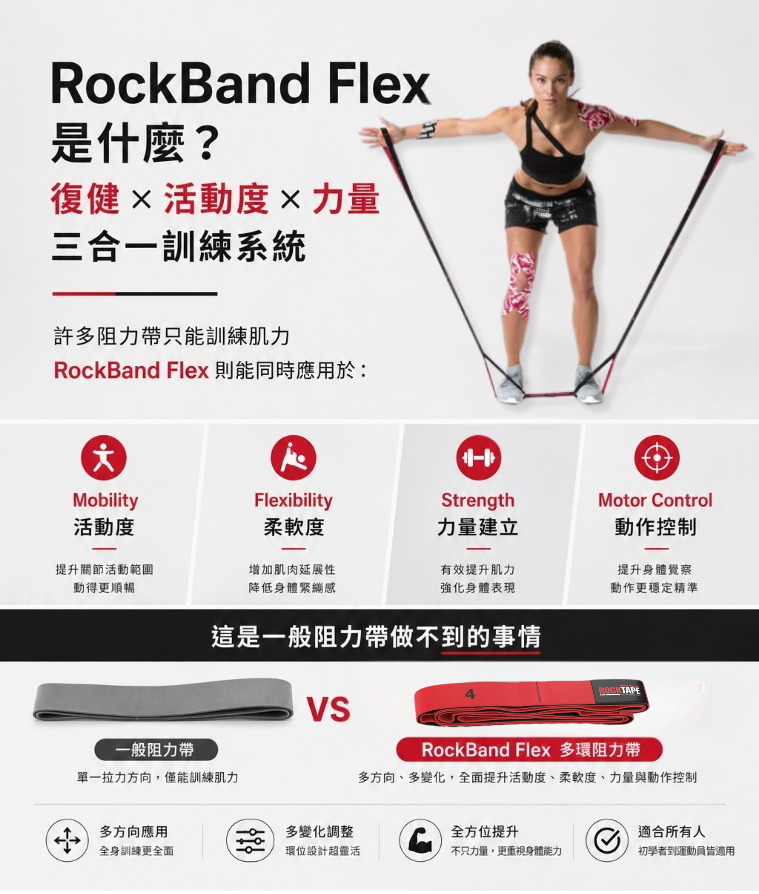
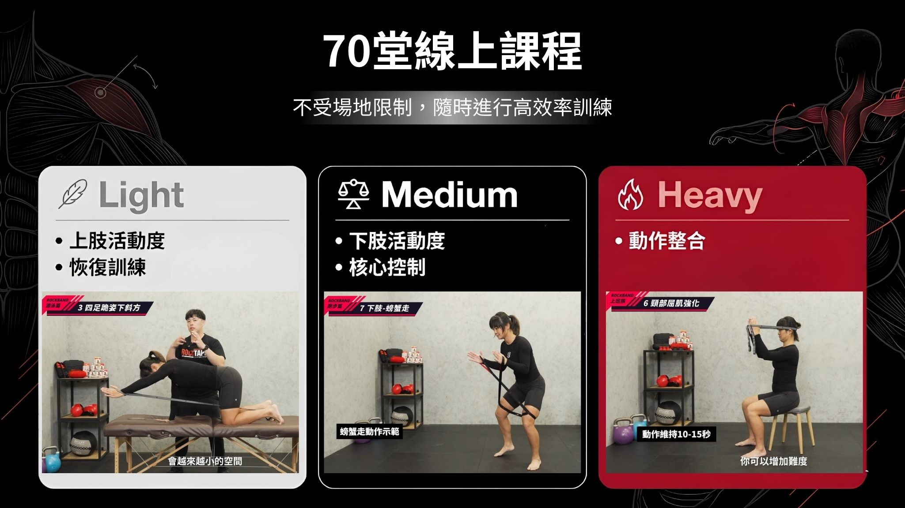
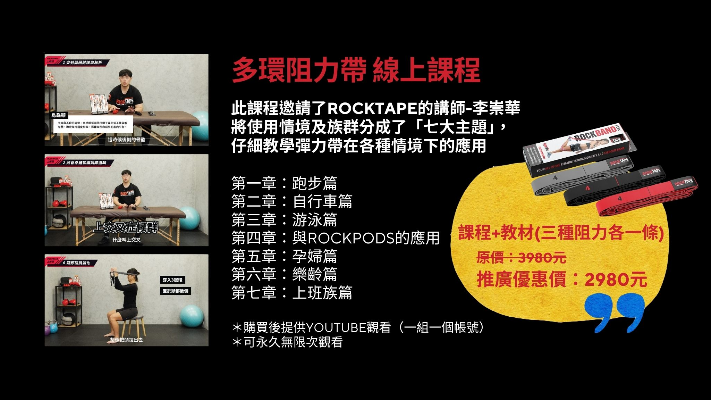

你是不是也買過彈力帶，卻不知道怎麼用？
放在家裡、健身房、包包裡，最後只會做幾個簡單拉伸動作。但其實，一條好的阻力帶，不只是拿來「拉一拉」而已。
RockBand Flex 多環阻力帶搭配完整線上課程，帶你從基礎使用、身體啟動、活動度訓練，到不同運動族群與日常情境的應用，真正學會如何把阻力帶用在跑步、騎車、游泳、孕婦訓練、樂齡保健與上班族日常放鬆中。
而是一套可以長期使用、反覆觀看、跟著練習的身體訓練系統。
為什麼你需要這堂課？
很多人買了阻力帶，卻遇到三個問題：
第一，不知道該怎麼開始。
第二，不知道不同阻力該怎麼選。
第三，不知道自己的身體狀況適合做哪些動作。
結果阻力帶變成「看起來很實用，但實際上很少用」的工具。
RockBand Flex 多環阻力帶線上課程，幫你把這些問題一次解決。

透過七大主題課程，你可以依照自己的運動習慣、生活型態與身體需求，選擇適合自己的單元練習。不管你是跑者、騎車族、游泳愛好者、孕期女性、銀髮長者，或長時間久坐的上班族，都能找到適合自己的應用方式。
RockBand Flex 不只是彈力帶，而是更好上手的多環訓練工具
一般彈力帶常見的問題是：不好抓、長度不好調、阻力不好控制、動作容易代償。

RockBand Flex 採用多環設計，讓雙手、雙腳可以快速找到固定位置，不需要打結，也不需要一直調整長度。
不同環位可以對應不同身高、不同動作角度與不同訓練強度，讓阻力帶的應用更穩定，也更容易進入正確動作。
無論是跑前啟動、肩膀活動、核心穩定、臀腿訓練，或是日常居家伸展，一條 RockBand Flex 都能依照你的需求變化使用。


課程特色

1. 七大主題，對應真實使用情境
這堂課不是零散的動作示範，而是依照不同族群與運動需求設計。從跑步、自行車、游泳，到孕婦、樂齡與上班族，讓你不只是學會「動作」，更知道什麼情境下該怎麼用。
2. 搭配三種阻力，從入門到進階都能練
本方案包含三種阻力 RockBand Flex 各一條。較低阻力適合啟動與恢復；中等阻力適合日常肌力控制；較高阻力適合進階肌力強化。讓同一套課程可以依照能力逐步進階。
3. YouTube 線上觀看，永久不限次複習
購買後提供 YouTube 課程觀看權限。一組課程對應一個帳號，可永久不限次觀看。忘記動作時隨時回去複習，這是一套可以長期陪你訓練的工具庫。
4. 由 ROCKTAPE 專業講師設計與示範
課程邀請 ROCKTAPE 講師李崇華，設計完整的多環阻力帶應用內容。不只教你「怎麼做」，也會帶你理解每個動作適合用在哪裡，真正帶回生活與專業現場。

七大主題課程內容
跑步不只是雙腳往前跑，更需要穩定的髖關節、臀部啟動與下肢控制。
跑步篇會帶你學習如何使用 RockBand Flex 進行跑前熱身、臀腿啟動、髖膝控制與下肢穩定訓練。
適合：跑者在訓練前啟動身體，也適合平常容易膝蓋不穩、臀部無力、跑步姿勢容易跑掉的人使用。
長時間騎車常常會讓髖關節、下背、肩頸與膝蓋承受壓力。
自行車篇針對騎乘族群常見需求，設計出適合騎車前後使用的阻力帶訓練，幫助建立核心穩定、髖膝控制與下肢力量連結。
適合：公路車、登山車、飛輪訓練與長時間騎乘族群。
游泳需要大量肩關節活動與上肢控制，如果肩胛穩定不足，很容易造成肩膀緊繃、卡卡或使用過度。
游泳篇會帶你用 RockBand Flex 建立肩關節活動度、肩胛控制與核心連結，幫助游泳族群在下水前做好準備，也能作為日常肩部訓練工具。
適合：游泳愛好者、鐵人三項選手，以及肩膀容易緊繃的人。
很多人放鬆完身體，卻沒有進一步建立動作控制，結果身體很快又回到原本緊繃的模式。
這一章結合 RockPods 軟拔罐與 RockBand Flex 多環阻力帶，帶你理解如何從筋膜放鬆、組織滑動，到動作啟動與控制訓練。
適合：不是只追求「放鬆感」，而是讓身體在放鬆之後，重新學會更好的動作模式。
孕期身體會出現姿勢、骨盆、下背與髖部的變化，適度活動有助於維持身體舒適與日常活動能力。
孕婦篇設計溫和、低門檻、可調整的阻力帶動作，協助孕期女性進行適合的活動度與肌力控制練習。
適合：想在孕期維持活動習慣，但不知道如何安全開始的族群。
樂齡訓練的重點不一定是高強度，而是能不能安全、穩定、持續地維持日常活動能力。
樂齡篇透過簡單好上手的阻力帶動作，協助訓練下肢力量、關節活動度、平衡感與身體控制。
適合：長者、銀髮族、活動量較低者，或想幫家人建立居家運動習慣的人。
長時間坐辦公室、低頭滑手機、使用電腦，容易讓肩頸、胸椎、下背與髖部變得僵硬。
上班族篇設計適合居家與辦公室使用的阻力帶動作，幫助改善久坐後的緊繃感，重新啟動肩胛、核心、髖部與背部肌群。
適合：長時間久坐、肩頸緊繃、腰痠、活動量不足的族群。

🔥 解鎖更多可能：在家模擬皮拉提斯器械訓練概念
RockBand Flex 的多環設計，可以模擬部分 Pilates Reformer 常見的阻力方向與動作控制概念。
不需要大型器械，也能在家進行核心控制、肩胛穩定、髖部活動與全身線條訓練。

常見問題 Q&A
Q：我是運動新手，可以上這堂課嗎？
可以。課程依照不同族群與情境設計，可以從低阻力、低強度動作開始練習。
Q：課程可以看多久？
購買後提供 YouTube 觀看權限，可永久不限次觀看。
Q：一組可以幾個人觀看？
一組課程對應一個帳號觀看。
Q：我已經有一般彈力帶，還需要 RockBand Flex 嗎？
RockBand Flex 的多環設計更容易固定手腳位置，不需要打結，也更方便調整長度與阻力角度，對初學者與教學者都更好上手。
Q：孕婦可以使用嗎？
課程中有孕婦篇，設計以溫和、可調整的活動為主。若有特殊妊娠狀況或不適，建議先諮詢醫師或專業人員。
Q：樂齡族適合嗎？
適合。樂齡篇以簡單、低門檻、可持續的居家訓練為主，適合維持日常活動力、平衡與下肢力量。
Q：購買後怎麼開通課程？
完成購買後，將依照訂單資訊提供 YouTube 課程觀看權限。
